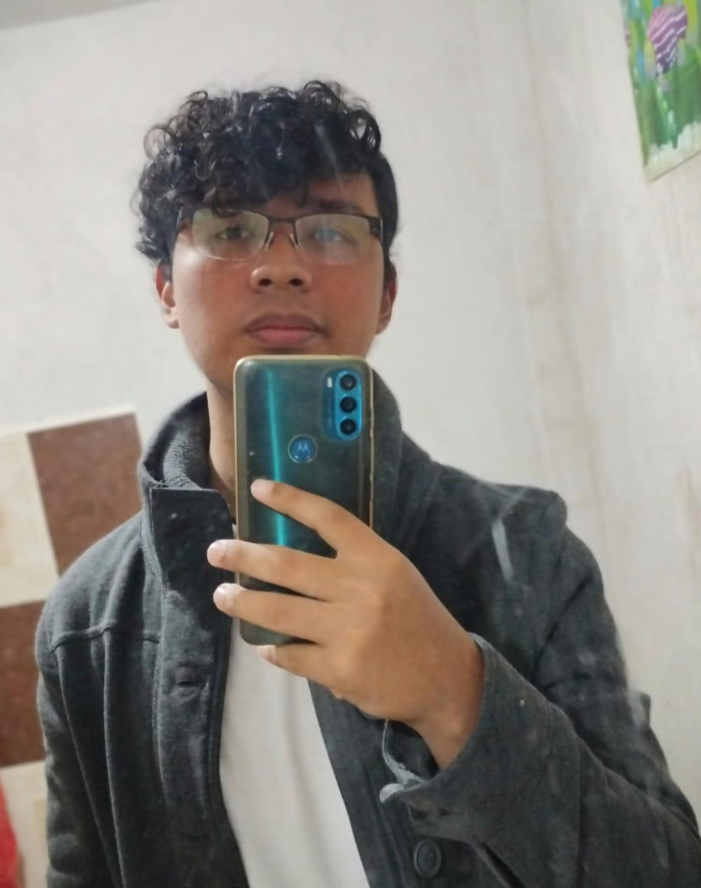

Ubicación
Datos Personales
- Nombre completo: Hugo Angel Leynes Lopez
- Fecha de nacimiento: 12 de Septiembre del 2003
- Lugar de nacimiento: Orizaba
- Teléfono: 272-196-7128
- Gmail: hug.angel10@gmail.com
- Dirección: 4rta privada de paseos de tenango, Col Felipe
Formacion academica
- 2021 - 2026 0000000000Licenciatura: Ingenieria en Sistemas Computacionales - Instituto tecnologico de Orizaba
- 2018 - 2021 Preparatiria Tecnica: Programacion - CETIS 146 Miguel Barragan
Experiencia Laboral
- Empresa: Fundymet : Diseñador/Obrero - 2019
- Empresa: H2O: Maquilador/Diseñador - 2020
Video